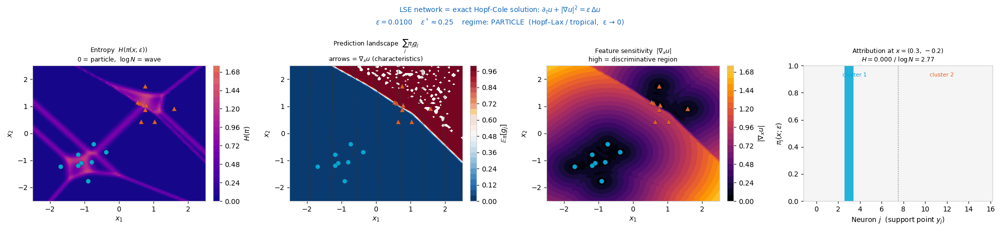
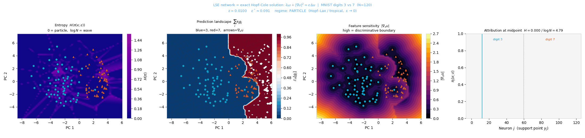
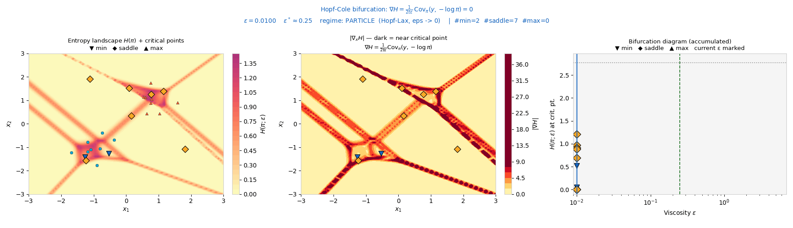
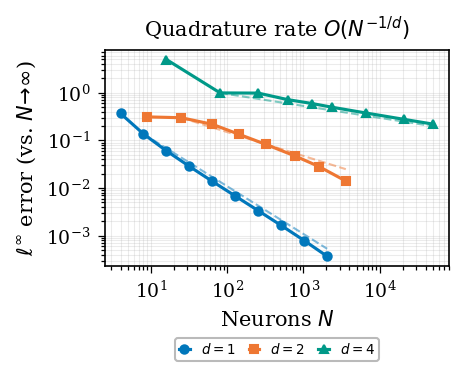
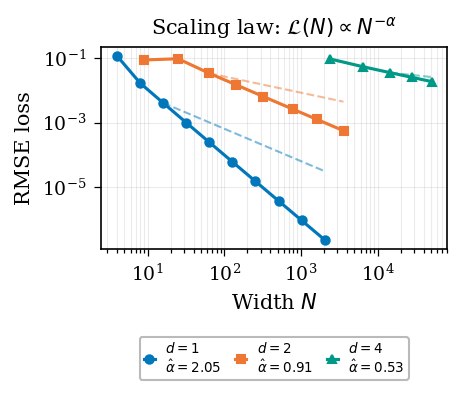
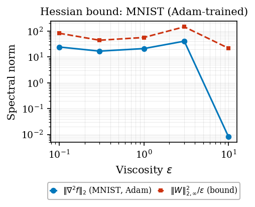
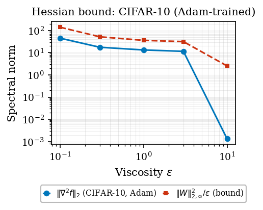

A trained neural network is, exactly, a Hamilton–Jacobi PDE, and training searches for its initial data. A single deformation parameter ε ties together four views: network, tropical algebra, viscous PDE, and convex optimization.
1Center for AI Research PH 2Asian Institute of Management
Training a neural network is identified, exactly, as a search through Hamilton–Jacobi initial-value problems: each gradient step selects the initial data of a viscous Hamilton–Jacobi equation whose Hopf–Cole propagator best fits the observations; at inference, the input is the spatial point at which that solution is evaluated and the initial condition is already encoded in the weights. The correspondence is exact for log-sum-exp layers and structural for broader architectures: residual networks, transformers, and recurrent architectures (RNNs, LSTMs, SSMs) each discretize the same class of Hamilton–Jacobi equations, with architecture-dependent Hamiltonian and viscosity. A single deformation parameter ε unifies all four perspectives (network, tropical algebra, viscous PDE, convex optimization) in a commutative diagram closed under Lipschitz conditions. Quantitative consequences include the minimax-optimal generalization rate \(O(n^{-1/(d+2)})\) for fixed t, adversarial robustness controlled by ε, backpropagation as the co-state equation of the Hamiltonian system for residual networks, scaling exponents consistent with data intrinsic dimension via PDE quadrature, and a closed-form O(N) influence function whose entropy landscape undergoes fold bifurcations as ε increases.
Training a neural network is identified, exactly, as a search through Hamilton–Jacobi initial-value problems: each gradient step selects the initial data of a viscous Hamilton–Jacobi equation whose Hopf–Cole propagator best fits the observations; at inference, the input is the spatial point at which that solution is evaluated, and the initial condition is already encoded in the weights. Press Play and watch it happen: a small network trains live (Adam) to fit the target on the left. With one layer the network is a single convex Hamilton–Jacobi layer — the middle panel reads its initial data \(g(y)\) (the Legendre transform of the output) and the right panel runs that equation forward in time. A convex layer can fit only convex shapes, so pick a non-convex target (sine, double well) and watch it fail with no hidden blocks, then drag blocks into the network below: composing convex layers yields a non-convex function that fits them — the paper's multilayer construction, each block one Hamilton–Jacobi step.
Conventionally the question runs one way: given a PDE, design a network to approximate its solution. Here a trained network already is a Hamilton–Jacobi equation, and the question is which one.
The key is a single deformation parameter ε and ultradiscretization, the exact passage ε → 0 between two algebraic worlds. At ε = 0, addition is max and multiplication is + (the tropical semiring); at ε > 0, ordinary arithmetic is restored and the same objects reappear as the solution operator of a viscous PDE. This passage is not an approximation but an exact semiring homomorphism, the Maslov dequantization.
The object realizing this is a log-sum-exp layer: \[ f_\varepsilon(x) \;=\; \varepsilon \log \sum_{j=1}^{N} \exp\!\Big( (W_j \cdot x + b_j)/\varepsilon \Big). \] The Hopf–Cole linearization identifies it exactly as the heat-equation propagator of a viscous Hamilton–Jacobi equation: the weights encode the initial data, the architecture encodes the Hamiltonian, and a forward pass evaluates that PDE solution at the query point.
Moving right is ultradiscretization (Maslov dequantization): the smooth ε > 0 object hardens into its tropical / Hopf–Lax limit as ε → 0. Moving down is the exact identification of the network layer with the PDE solution. The square commutes: the two limits (ε → 0 and width N → ∞) can be taken in either order and give the same answer.
| Neural network | Physics |
|---|---|
| LSE layer at ε > 0 | Quantum statistical mechanics (partition function) |
| Tropical limit ε → 0 | Classical mechanics (principle of least action) |
| ε | ℏ (Planck's constant) |
| Softmax weights πj | Boltzmann–Gibbs probabilities |
| Network forward pass | Imaginary-time Schrödinger propagator |
| Neurons j = 1,…,N | Discrete paths in a path integral |
The Feynman–Kac formula is the unifying object: each neuron is a discrete path weighted by a Boltzmann factor, and the forward pass computes the log-partition function of the ensemble.
A trained network is a physics equation in disguise. Normally you pick an equation and build a network to approximate its solution. This work reverses that: once a network is trained, it already is the exact solution of a specific Hamilton–Jacobi equation, the kind that describes how a wavefront spreads or how a particle finds its least-effort path. Training searches for which equation (its starting shape) fits the data, and a forward pass reads off that solution at your input.
One knob, ε, controls everything. Turn it down and the network becomes sharp and decisive, picking the single best match. Turn it up and it blends many options smoothly, the way heat diffuses and blurs detail. The same number plays three roles at once: the softmax temperature, the equation's viscosity, and the strength of the regularization.
The same limit links quantum to classical physics. Sharpening the knob fully (ε → 0) turns a soft, probabilistic computation into a hard, deterministic one, the same move that takes quantum mechanics to classical mechanics as Planck's constant vanishes. A forward pass is then a sum over paths, as in Feynman's path integrals, but with positive weights, which is what keeps it computable on an ordinary computer.
The log-sum-exp layer is a smooth deformation of the tropical max. Drag ε to see LSEε(a, 0) relax toward max(a, 0) (left) and its gradient become the Gibbs / softmax weight σ(a/ε) (right). As ε → 0 the smooth layer hardens into the Hopf–Lax lookup; as ε grows it becomes the viscous heat propagator.
The attribution weights \(\pi_j(x;\varepsilon) \propto \exp\!\big((W_j \cdot x + b_j)/\varepsilon\big)\) form a closed-form influence function. These weights are a Gibbs measure: a probability distribution that gives each neuron a share proportional to exp(score / ε), so higher-scoring neurons get exponentially more weight and ε sets how peaked the split is. This is exactly the softmax, the same rule statistical physics uses to weight states by energy. As ε sweeps, this measure transitions from a concentrated particle regime (Hopf–Lax, ε → 0) to a spread-out wave regime (heat equation, ε → ∞). Drag ε and watch the weights and their entropy H(π) change. The critical scale is \(\varepsilon^* = N^{-1/d}\).
Each attention row is a Gibbs measure \(\pi\) over keys (effective temperature \(\varepsilon=\sqrt{d_{\mathrm{head}}}=8\) for distilgpt2). The normalized entropy \(H(\pi)/\log k\) of a head separates particle heads (focused, retrieval-like, low entropy) from wave heads (diffuse, mixing, high entropy). These are real attention tensors, precomputed and loaded as data. Click any head to see its actual attention matrix.
Animations of the LSE network as a Hopf–Cole solution as the viscosity ε sweeps across the critical scale ε* = N−1/d.



Along a 1-D slice through the data, the attribution entropy H(π(x;ε)) has a basin (local minimum) near each support point and a ridge (local maximum) between neighbours. As the viscosity ε increases, neighbouring basins merge: a minimum and an adjacent maximum collide and annihilate in a fold (saddle-node) bifurcation. Drag ε to watch critical points disappear; the right panel traces each critical point's entropy value across ε.
The same correspondence pins two well-known failure modes down as exact geometric statements. Hallucination is deterministic out-of-distribution extrapolation: outside the diffusion radius \(\sqrt{2\varepsilon t}\) of every training point, the output collapses to the dominant neuron's linear continuation, ungoverned by the data. Double descent is the curvature \(\|\nabla^2_x f\| = \mathrm{Var}_\pi[W]/\varepsilon\) peaking at the Voronoi boundaries between neurons (near-shocks where \(\pi=\tfrac12\)); at the interpolation threshold these shocks become dense.

Generalization rate. ℓ∞ error vs. width N for Lipschitz initial data across \(d \in \{1,2,4\}\); dashed \(O(N^{-1/d})\) slopes confirm the minimax rate.

Scaling law. Test RMSE vs. width for Adam-trained LSE networks; the empirical exponent recovers the data intrinsic dimension via PDE quadrature.

Certified robustness (MNIST). Measured spectral norm \(\|\nabla^2_x f\|_2\) vs. the theoretical bound \(\|W\|_{2,\infty}^2/\varepsilon\); the bound is never violated.

Certified robustness (CIFAR-10). Same bound across \(\varepsilon \in \{0.1, 0.3, 1.0, 3.0, 10.0\}\); raising \(\varepsilon\) monotonically reduces input sensitivity.
The layer–PDE identity \(f_\varepsilon + u_\varepsilon = |x|^2/(4t)\) and the transformer attention = Gibbs-measure identity are exact algebraic statements, not approximations: they hold to floating-point roundoff across all ε, d, and random trials tested. The useful question is then which architectures and activations admit such an exact Hamilton–Jacobi identity, and which do not.
HJ correspondence status for common activations
| Activation | Tropical limit (ε→0) | Finite-ε structure | Exact HJ identity |
|---|---|---|---|
| LSE | \(\max_j(W_j \cdot x + b_j)\) | Hopf–Cole solution | Yes (solution-class) |
| ReLU | \(\max(x,0)\) | 2-neuron LSE special case | Yes (special case) |
| Softplus | \(\max(x,0)\) | \(\log(1+e^x) = \mathrm{LSE}_1(x,0)\) | Yes (N=1 case) |
| Sigmoid | Heaviside | \(\nabla_x \mathrm{LSE}_1(x,0)\) | Yes (\(\nabla\)-class) |
| tanh | \(\mathrm{sign}(x)\) | \(\pi_+ - \pi_-\) (signed Gibbs weight) | Yes (\(\nabla\)-class) |
| SiLU | ReLU | \(x \cdot \nabla_x \mathrm{LSE}_1(x,0)\) | Open (one derivative off) |
| GELU | ReLU | \(x \cdot\) (heat kernel integral) | Open (product form) |
@article{minoza2026hjdl,
title = {The Hamilton--Jacobi Theory of Deep Learning},
author = {Mi{\~n}oza, Jose Marie Antonio and Legara, Erika Fille T. and Monterola, Christopher P.},
journal = {arXiv preprint arXiv:2605.28983},
year = {2026},
eprint = {2605.28983},
archivePrefix = {arXiv},
}